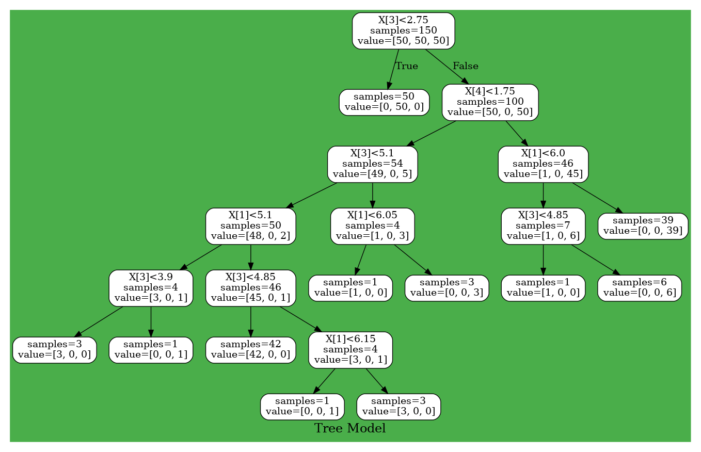

Tree
Decision Tree
From here, let's build a slightly more advanced model. The first is decision tree analysis. This model creates a tree structure classifier by creating nodes that recursively divide data.
Train
Unlike other classifiers, this model doesn't require the data used for training to be in OneHot format, and it can be used as labels.
using HorseML.Preprocessing
using HorseML.Tree
using HorseML.Tree: fit!
data = Matrix(dataloader("iris"))
x, t = data[:, 1:4], data[:, 5]
model = DecisionTree()
fit!(model, x, t)Visualize
Some of you may have seen it on HorseML's README.md. Let's visualize the trained decision tree using Graphviz! First, let's make a dot file to visualize with Graphviz by the MV function.
MV("/home/ubuntu/Tree.dot", model, rounded = true, bgcolor = "#4aae4a", label = "Tree Model")Next, it's done by visualizing it using Graphviz!
#In command line, if you haven't installed Graphviz, install with `sudo apt add graphviz`
$ dot -Tpng -o /home/ubuntu/Tree.png /home/ubuntu/Tree.dotLet's look at Tree.png...

RandomForest
RandomForest generates some DecisionTree(like SVC). What is different from the decision tree is that you need to specify the number of decision trees to generate.
model = RandomForest(10)
fit!(model, x, t)Visualization can be done in the same way.
paths = ["/home/ubuntu/tree$i.dot", for i in 1 : 10]
MV(paths, model, rounded = true, bg = "#4aae4a", label = "Forest Model")$ dot -Tpng -o /home/ubuntu/tree1.png /home/ubuntu/tree1.dot
$ dot -Tpng -o /home/ubuntu/tree2.png /home/ubuntu/tree2.dot
$ dot -Tpng -o /home/ubuntu/tree3.png /home/ubuntu/tree3.dot
⋮